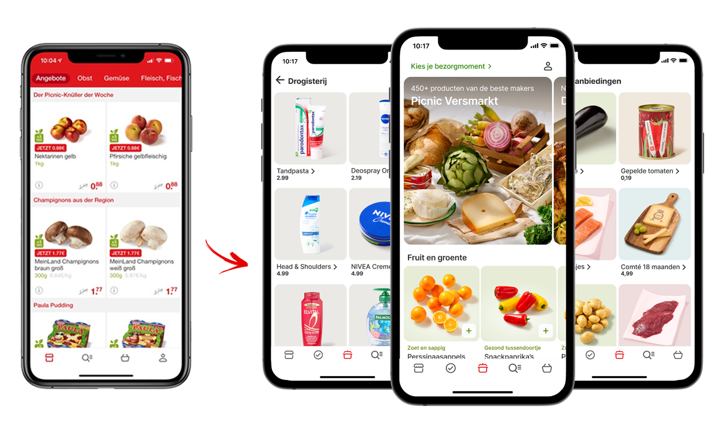
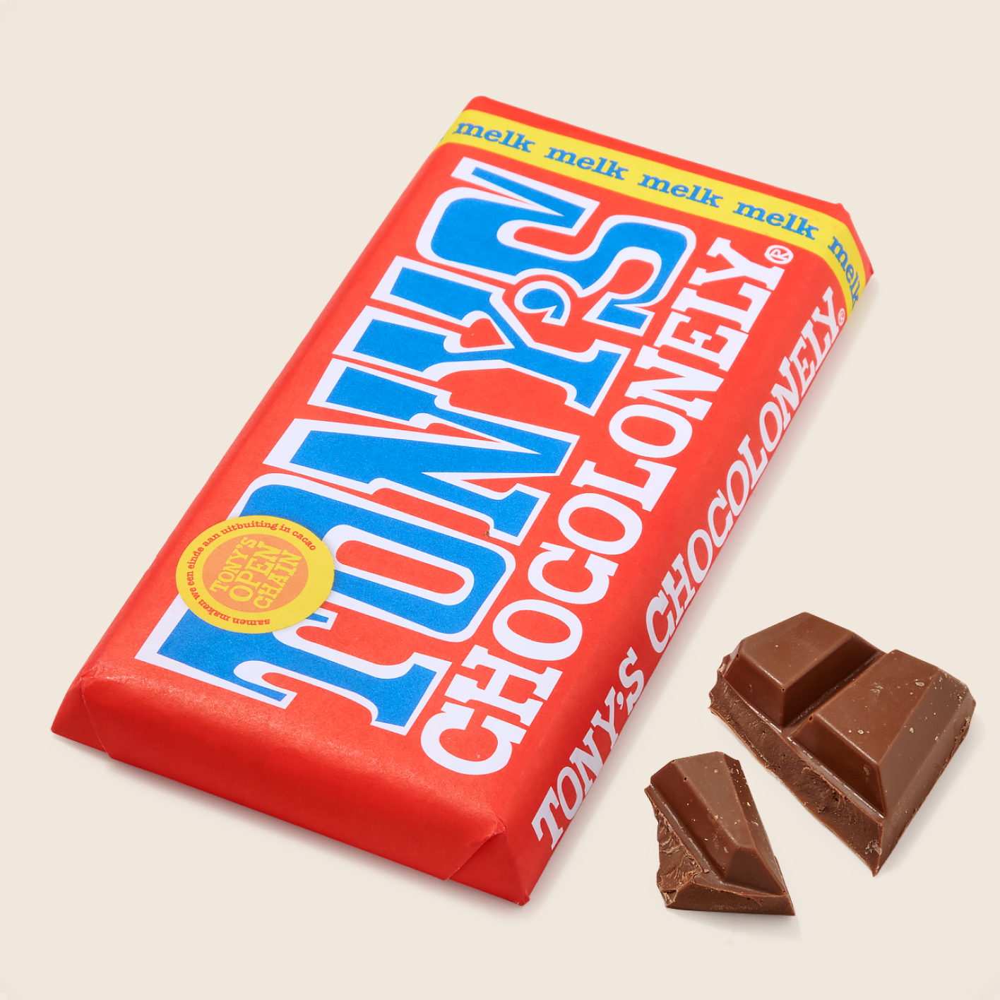
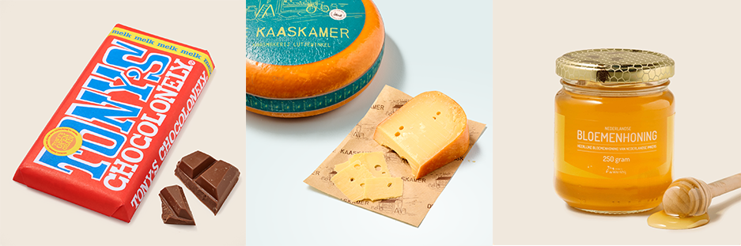
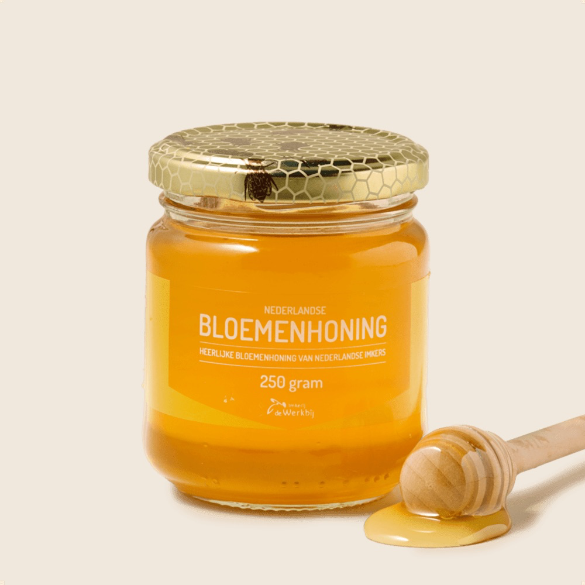

Productpresentatie
Als Visual Designer visualiseerde ik, in samenwerking met stakeholders, de productachtergronden bij Picnic van wit naar kleur.
Ik verbeterde de kwaliteit van de productfoto's en vergrootte de tiles om de producten meer ruimte en aandacht te geven.
Om de productpresentatie zo natuurlijk mogelijk te houden en de kwaliteit van de producten goed over te brengen naar de klant, wilde ik de natuurlijke schaduw van de producten meenemen in de tile. Het probleem waar we tegen aanliepen: de achtergrondkleur in de tile werd geautomatiseerd gegenereerd, waardoor producten niet op een witte achtergrond gefotografeerd konden worden — bijvoorbeeld bij een doorzichtige verpakking. Uiteindelijk koos ik ervoor om de producten op kleur te fotograferen en de schaduw mee te laten clippen. Zo kwam het product nog beter tot zijn recht en zorgde dit voor een betere klantervaring.




